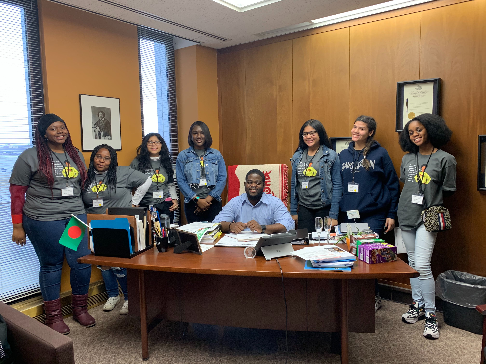
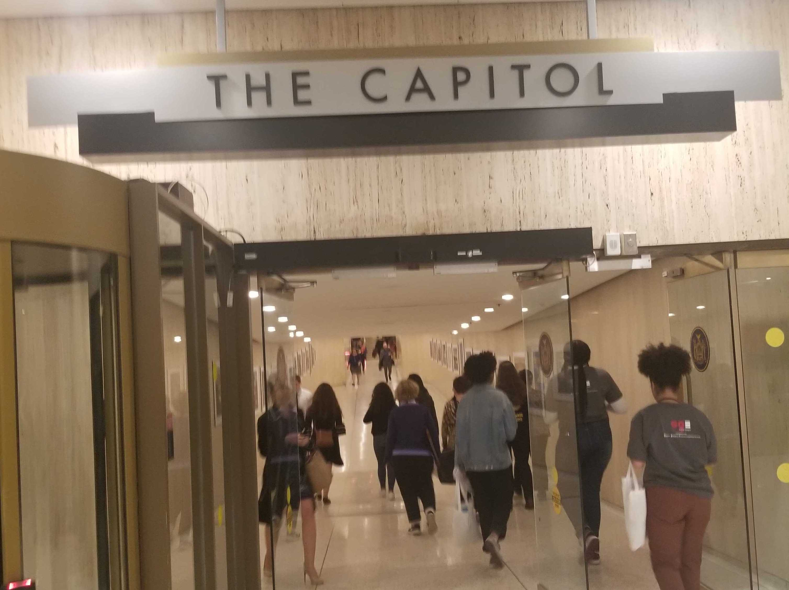

Senator Velmanette Montgomery (NYS Senate, D-25) welcomed us to Albany. While speaking to our group, she mentioned the new exhibit on display for Women's History Month and spoke on the legacy of Hairret Tubman. "I have changed her name, in my mind, from a noun to a verb. What you are doing here today is Harrieting," in reference to our young people fighting for issues that impact their communities.
The bill is sponsored by Senator Julia Salazar in the Senate and Assemblymember Aravella Simotas in the Assembly. Both, Salazar and Simotas, joined us at our rally on the Million Dollar Staircase in Albany.
"When we show up and use our voices and civic power, we can make things happen." Sakhina
"The word incorrigible means oppressed to me. It means injustice to me." Sieara
"Incorrigible is "yet another way to criminalize black females and push them out of schools" Anaiah


Assemblymember Aravella Simotas (NYS Assembly, D-36) stopped by during lunch and spent time talking with young people. After a young person asked her about changing laws, Simotas outlined a strategy that started with building community relationships and ended with pressuring legislators. She constantly reminded young people that elected officials are actually public servants and people should always make sure that legislators are serving the people in their communities.
Senator Julia Salazar (NYS Senate, D-18) provided a warm welcome to us in Albany. She spent time speaking with our young people about all things politics. She had lunch with our group where she, along with Assembly member Simotas, presented certificates to all the young people.